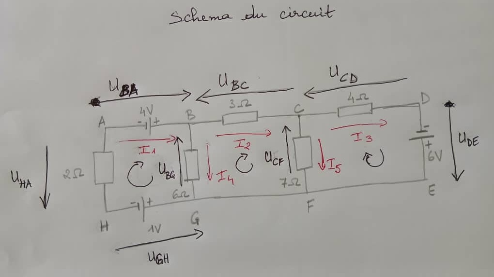
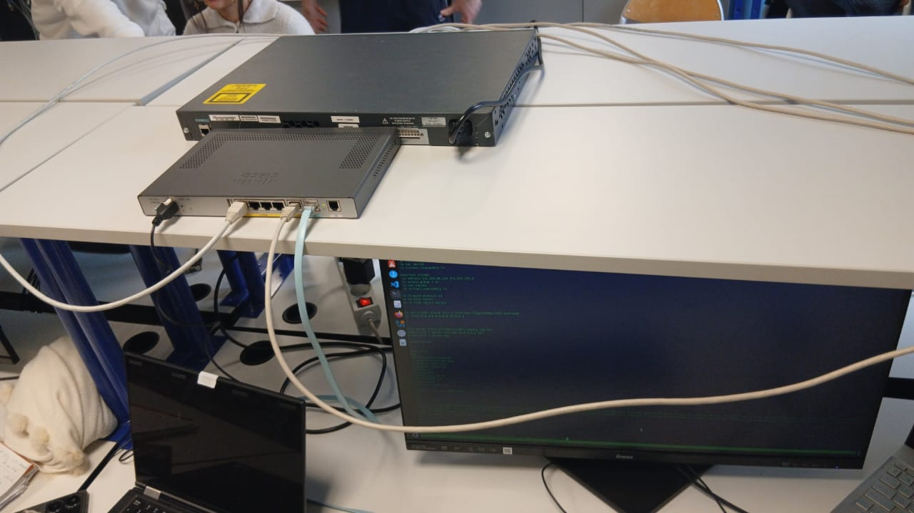
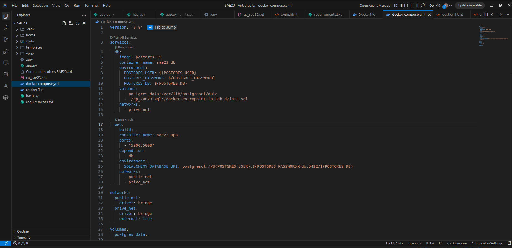
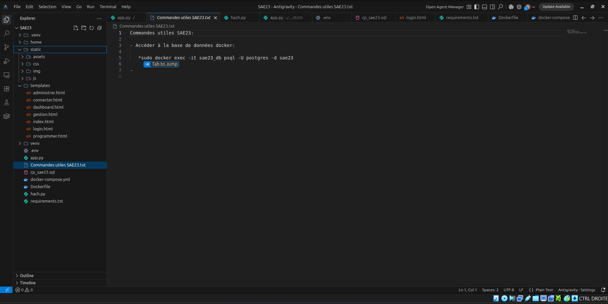

Administrer
Gérer, superviser et configurer l'ensemble des infrastructures systèmes et des réseaux locaux d'entreprise. Ce pôle certifie une solide expertise pratique dans l'administration d'équipements actifs (VLANs, trunks Cisco, routage statique, STP, EtherChannel) et le déploiement de serveurs virtualisés (Active Directory et conteneurs Docker).
Apprentissages Critiques (AC)
Cliquez sur un apprentissage critique pour faire défiler la page et voir ses preuves réelles et détails techniques correspondants.
Maîtriser les lois fondamentales de l'électricité afin d'intervenir sur des équipements de R&T
Comprendre l'architecture et les fondements des systèmes numériques, du codage et de l'Internet
Configurer les fonctions de base du réseau local (Cisco Switchs, VLANs, Trunks, STP, WAN)
Maîtriser les rôles fondamentaux des OS pour administrer les services réseau et de conteneurisation
Supervision, détection de pannes, pare-feu et signalement de dysfonctionnements réseaux
Installer un poste client, configurer ses interfaces réseau CLI et expliquer la procédure
Dossier de Preuves Détaillé
Lois fondamentales de l'électricité et équipements R&T
Contexte d'apprentissage
Travaux pratiques appliqués pour comprendre le fonctionnement électrique et l'alimentation des équipements physiques et matériels de réseaux.
Actions et réalisations
Modélisation et montage de circuits électriques, application méthodique de la loi d'Ohm, de lois des mailles (loi de Kirchhoff) et calculs de tensions et intensités pour sécuriser le branchement d'équipements de communication.
Outils & Technologies

Fondements des systèmes numériques, codage et modèle OSI
Contexte d'apprentissage
Initiation à l'architecture informatique et aux bases des communications réseaux locaux et internet (R101/R102).
Actions et réalisations
Assimilation méthodique des couches du modèle de référence OSI et TCP/IP, conversions numériques de bases (binaire, hexadécimal) et validation d'adressage IP et d'encapsulations de données.
Outils & Technologies
Configuration réseau local d'entreprise (Cisco LAN Administration)
Contexte d'apprentissage
Administration d'infrastructures réseaux locales et configuration d'équipements de routage et commutation Cisco en salle de TP.
Actions et réalisations
Configuration physique et CLI de Switchs Cisco Catalyst : création de VLANs, trunks logiques 802.1Q, supervision de tables de commutation CAM. Déploiement et sécurisation des accès distants par cryptage de clés RSA et protocole SSH v2. Configuration du protocole Spanning Tree (STP) pour la redondance (élection de Root Bridge) et d'EtherChannel (agrégations LACP logiques). Configuration d'adresses d'interfaces WAN de routeurs Cisco.
Outils & Technologies

Administration Système & Rôles des OS virtualisés et conteneurisés
Contexte d'apprentissage
Installation de serveurs d'administration et d'infrastructures de machines virtuelles pour les réseaux d'entreprises (R202/SAÉ 2.3).
Actions et réalisations
Configuration de serveurs d'infrastructures d'administration centralisée Windows Server (Active Directory, comptes utilisateurs, gestion de droits, politiques GPO) et serveurs Linux d'administration. Gestion d'infrastructures de serveurs et bases de données conteneurisées avec Docker et déploiement multi-conteneurs réseaux via Docker Compose.
Outils & Technologies


Supervision, diagnostic et détection des pannes réseau
Contexte d'apprentissage
Diagnostic de connectivité réseaux, captures d'encapsulations de paquets et sécurisation pare-feu.
Actions et réalisations
Analyse et décodage de requêtes DNS Wireshark (ports de destination 53, captures UDP/IP). Supervision et édition programmée de paquets avec le script Python Scapy. Diagnostic de vulnérabilité de sécurité d'attaques d'ARP Spoofing. Administration et supervision de règles pare-feu `iptables` Linux (gestion de politiques DROP/ACCEPT et résolution de blocages SSH).
Outils & Technologies
Installation et configuration des interfaces réseau du poste client
Contexte d'apprentissage
Installation de systèmes d'exploitation clients sur hyperviseurs et configuration réseau bas niveau.
Actions et réalisations
Maîtrise complète de la configuration CLI réseau Linux client : attribution d'adresses d'interfaces (`ip a add`), activation/désactivation de cartes réseaux (`ip link set up/down`), configuration de routes IP statiques (`ip route add`). Résolution et consultation du cache ARP client (`ip n`, `ip -4 n`). Relevé de caractéristiques de postes clients sous Windows.